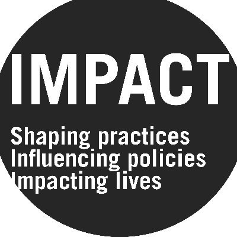

Work history
Experience
2024 — Now

Data Engineer — Sudan Mission
IMPACT Initiatives · Nairobi, Kenya
Current
- Designed and built a PostgreSQL star schema database consolidating 10+ humanitarian data sources
- Developed Python ELT pipelines ingesting field data from KoboToolbox API, with spatial joins, schema validation, and automated transformation
- Built a 4-tier location matching system achieving 100% geographic coverage across all datasets
- Created 10+ fact & dimension views supporting 26+ months of time-series field data
- Delivered Power BI dashboard used by humanitarian teams to track displacement and service gaps across 55 admin clusters
Feb — Jun 2025
Data Analyst — Libya Mission
IMPACT Initiatives · Tunis, Tunisia
- Processed and cleaned 5,000+ survey responses via KoboToolbox across 3 assessment rounds
- Built Power BI dashboards tracking displacement, food security, and healthcare access across 8 governorates
- Ran vulnerability and trend analysis in R and Python, outputs feeding directly into IMPACT situation reports and partner briefings
- Trained 5+ partner organizations on KoboToolbox and data quality best practices
Feb — Jun 2024
Data Scientist
VERMEG · Tunis, Tunisia · Internship
- Automated email classification using RoBERTa and DeBERTa achieving 92% accuracy
- Built BART summarization pipeline cutting manual email review time for compliance teams
- Built sentiment classifier to triage inbound tickets by urgency, reducing time-to-first-response on critical issues
Jul — Aug 2023
BI Analyst Intern
Wimbee · Tunis, Tunisia
- Built a Power BI dashboard giving the sales team real-time pipeline visibility, replacing manual weekly reports (15% tracking efficiency gain)
- Rebuilt Talend ETL pipeline integrating CRM and transaction data into the reporting layer, eliminating manual data exports